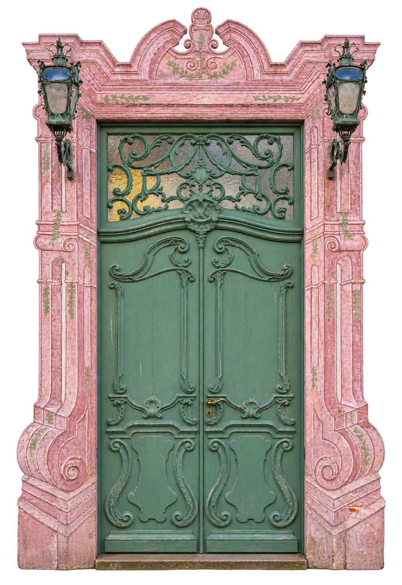
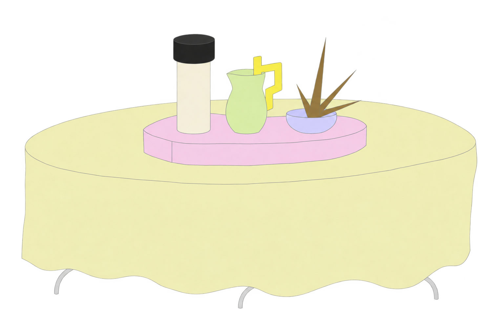
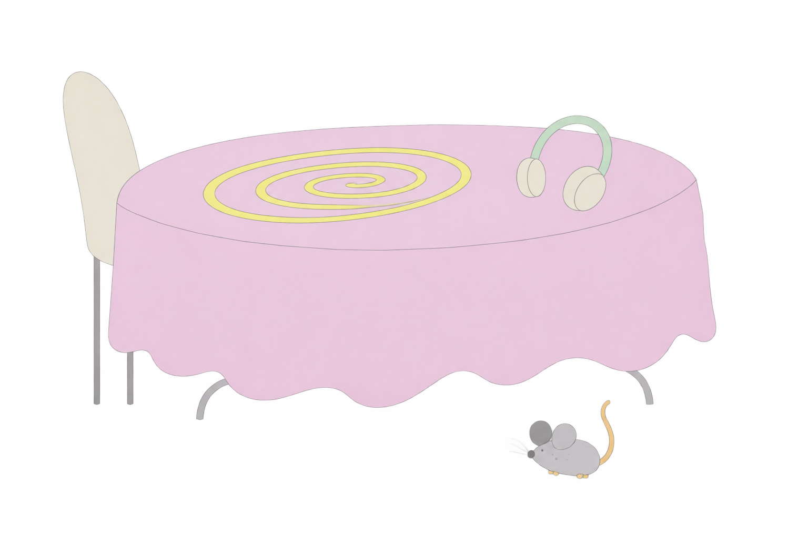
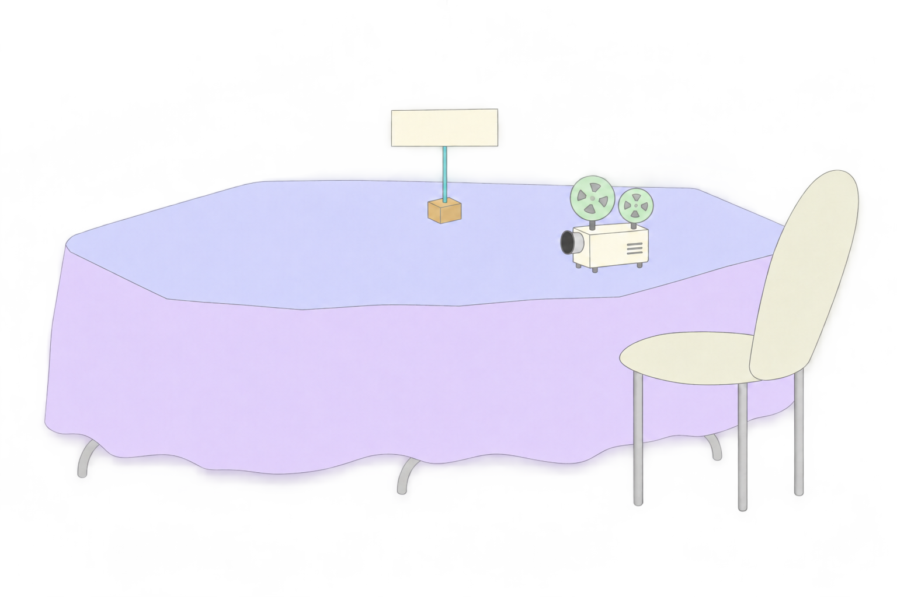
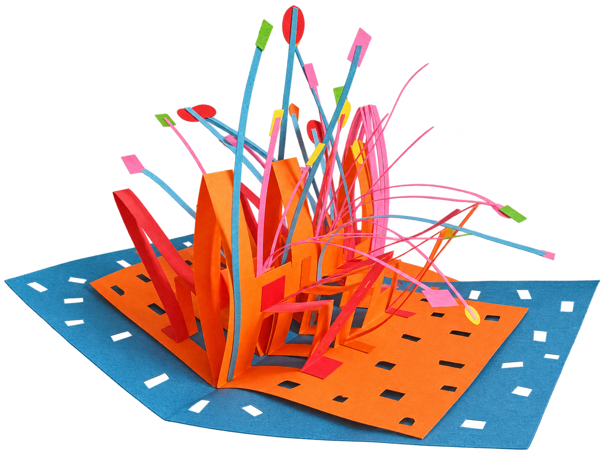
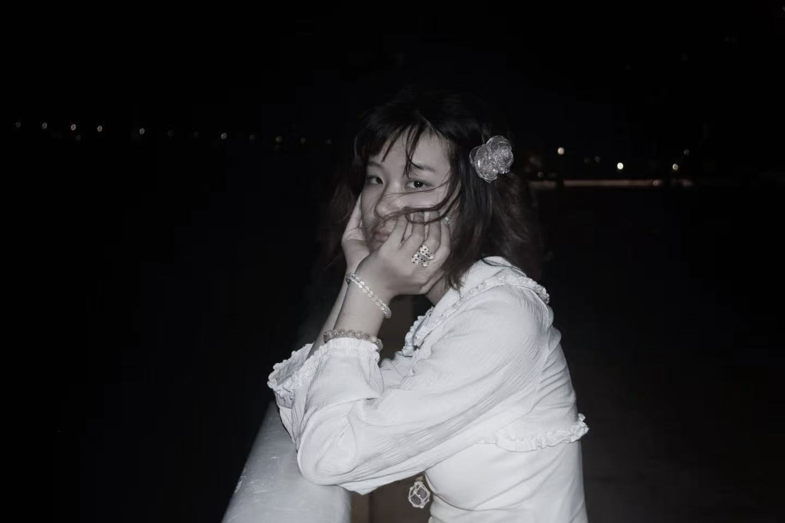

ELSEHERE · 视觉设计与社交媒体助理
探索字体、叠加材质与内容编排。参与制作的金鱼主题灵感档案获得 6.4 万+点赞。

将钥匙移到发光锁孔，点击解锁
影像与观察PHOTOGRAPHY · CREATIVE CODING · EXPERIMENTAL FILM

形状与实验CHARACTER · SPACE · GENERATIVE ART

动态与叙事MOTION DESIGN · MUSIC VIDEO · ANIMATION


纸间与维度POP-UP BOOK · 3D ANIMATION · BRAND DESIGN

我是 Yuxin Gong，数字媒体艺术专业学生，目前就读于西交利物浦大学。我在影像、动画、角色设计与交互实验之间创作，关注情绪如何通过画面、材质与叙事被感知。
西交利物浦大学 · 数字媒体艺术Digital Media Arts · BFA & BA (Hons)
2023 — 2027（预计毕业） · 中国苏州
Photoshop · Illustrator
InDesign · 视觉编排
After Effects · Premiere Pro
Blender · Maya · TVPaint
TouchDesigner · Unreal Engine
创意编程 · 生成视觉
探索字体、叠加材质与内容编排。参与制作的金鱼主题灵感档案获得 6.4 万+点赞。
参与儿童福祉主题短片的角色、场景设计与手绘动画，比较传统动画与 AIGC 辅助工作流程。
参与校园内容账号、视频海报与教育影像的制作。
2025 · 西交利物浦大学研究导向型学习研讨会
二等奖及最佳 AI 应用奖（团队）